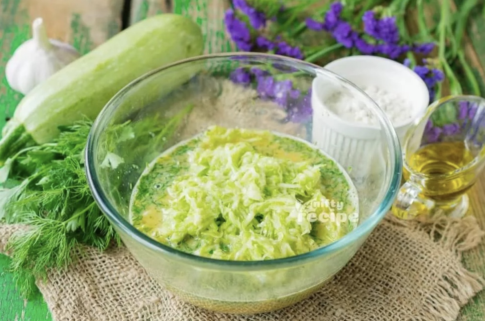
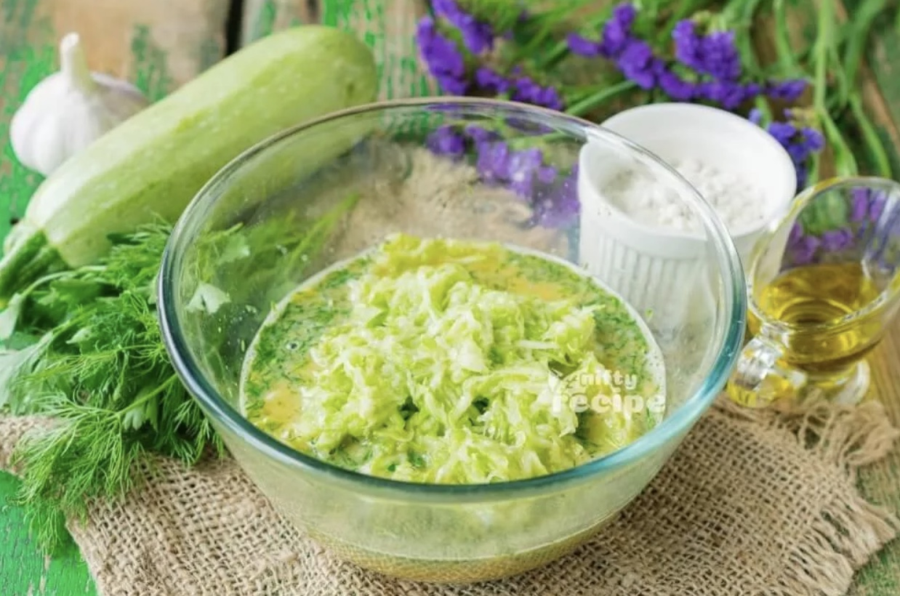

Recipes
Double Chocolate Cookies
Created by Colleen van Lent
Origin: Michigan
Source: Family Recipe
Category: Dessert

My daughter learned to make these cookies at a baking camp at Zingermanns and has tweaked the recipe to fit the taste buds of her siblings. They are extremely sugary so the salt helps to balance it. Note, these cookies are best eaten very quickly.
Recipe Ingredients
- Unsalted butter
- Granulated Sugar
- Packed light or dark brown sugar
- Large egg
- Pure vanilla extract
- Semi-sweet chocolate chunks (melted)
- All-purpose flour
- Natural unsweetened cocoa powder
- Baking soda
- Salt
- Semi-sweet chocolate chunks
Recipe Steps
- In a mixing bowl cream together the butter, granulated sugar, and brown sugar.
- Add the egg and vanilla extract and beat well.
- Add the melted chocolate.
- In a separate bowl combine the flour, baking soda, cocoa powder and salt.
- Combine the wet and dry ingredients.
- Add the unmelted chocolate chunks.
- Form 15 cookies and place on a baking sheet.
- Cooke for 12 to 13 minutes at 350 degrees.
Additional Food images


Chocolate Chip Banana Bread
Created by Ibrahim Moazzam and Memuna Tariq
Origin: American
Source: Best Chocolate Chip Banana Bread Recipe - How To Make Chocolate Chip Banana Bread
Category: Dessert

This is a tried-and-tested recipe that I have used numerous times for making the perfect chocolate chip banana bread! Not only does it help utilize the bananas that have slowly overripened at the back of the fridge, it ends up creating an incredibly delicious, and relatively healthy, dessert.
Recipe Ingredients
- Cooking spray
- 2 cups (240 g) all-purpose flour
- 1 tsp. baking soda
- 1/2 tsp. kosher salt
- 1 large egg plus 1 egg yolk
- 1 cup (200 g) granulated sugar
- 1/2 cup (1 stick) unsalted butter, melted
- 1/4 cup sour cream
- 1 tsp. pure vanilla extract
- 3 ripe bananas, mashed
- 1/2 cup chopped toasted walnuts
- 1/2 cup semisweet chocolate chips
Recipe Steps
- Preheat the oven to 350º. Line a 9"-by-5" loaf pan with parchment and grease with cooking spray.
- In a medium bowl, whisk flour, baking soda, and salt.
- In a large bowl, mix egg, egg yolk, granulated sugar, butter, sour cream, and vanilla. Add bananas and stir until combined. Gradually add dry ingredients to banana mixture until just combined.
- Fold in walnuts and chocolate chips and transfer to prepared pan.
- Bake bread until a tester inserted into the center comes out clean, about 1 hour. Let cool 10 minutes in pan, then invert onto a wire rack and let cool completely.
Additional Food images


Guacamole
Created by Yiran Zheng
Origin: Mexican
Source: My Recipe
Category: Appetizer

Guacamole is a Mexican dip made from mashed avocados, tomatoes, onions, cilantro, lime juice, and chili pepper, creating a creamy, zesty, and versatile condiment often enjoyed with tortilla chips, tacos, and more.
Recipe Ingredients
- Avocado
- Lime
- Salt
- Onion
- Tomato
- Cilantro
Recipe Steps
- Slice three ripe avocados in half.
- Scoop them into a mixing bowl.
- Use a fork to gently mash them.
- Add the onions, tomatoes, cilantro, jalapeno pepper, garlic, lime juice and salt and stir everything together.
Additional Food images


Zucchini Fritters
Created by Kay Malan
Origin: Unknown
Source: Nifty Recipe
Category: side dish/main dish

I found this recipe for zucchini fritters on a food blog when I was looking for quick and easy dishes to make during undergrad. It uses minimal ingredients and can be done in less than half an hour. They're delicious and filling and go great with dipping sauces.
Recipe Ingredients
- Zucchini
- Egg
- Flour
- Vegetable/seed oil
- Garlic
- Salt and pepper
Recipe Steps
- Combine eggs, salt, and pepper and whisk.
- Add pressed garlic.
- Grate the zucchini and squeeze the moisture out of it.
- Add zucchini and flour and mix.
- Heat oil in a pan and add dollops of batter.
- Serve with or without dipping sauce.
Additional Food images

 

BLAT Sandwich
Created by Yiran Zheng
Origin: American
Source: My Recipe
Category: Main

A BLAT sandwich is a delicious twist on the classic BLT, featuring crispy bacon, fresh lettuce, ripe tomatoes, and creamy avocado, all sandwiched between slices of bread for a satisfying blend of flavors and textures.
Recipe Ingredients
- Avocado
- Bacon
- Lettuce
- Tomato
- Bread
- Mayo
Recipe Steps
- Toasted bread slice spread with mayo.
- Put sliced avocado, bacon, sliced tomatoes, and lettuce on one spread of bread.
- Put the other slice of bread at the top.
Additional Food images